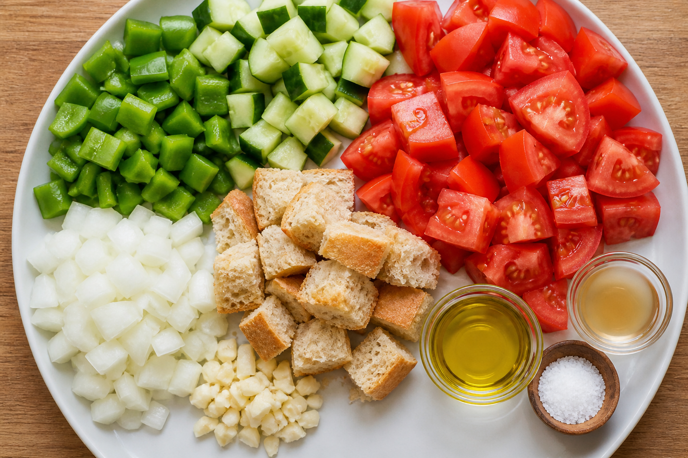

Ingredientes
- Pepino (opcional)
- Cebolla
- Vinagre
- Aceite de oliva
- Ajo
- Pan
- Pimiento verde
- Sal
- Tomate pera

Preparación
Lava y trocea los ingredientes

Añade pan remojado si quieres textura
Tritura todo
Añade aceite, vinagre y sal
Vuelve a triturar
Cuela si quieres textura fina
Enfría en la nevera
Sirve bien frío